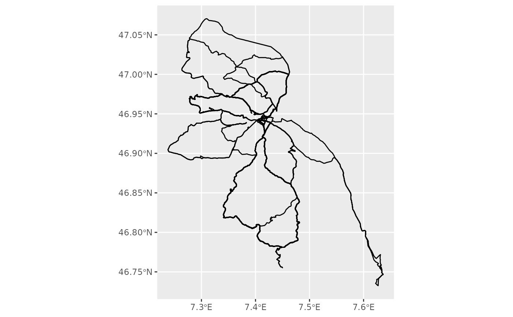

Create Linestrings from Points
to_linestrings.RdConverts a collection of points to a collection of linestrings, for faster plotting.
Points are grouped by date, and are assumed to be ordered.
Note that input data will be dplyr::summarize()'d by date, i.e. output will probably be
much shorter than input. Additionally, summarizing gets rid of all other information, i.e.
return value only contains dates and linestrings and will have to be joined with any additional
desired information.
Value
A tibble with two columns: date, and an sf geometry column, containing a linestring for each observation
Examples
library(sf)
#> Linking to GEOS 3.10.2, GDAL 3.4.1, PROJ 8.2.1; sf_use_s2() is TRUE
library(dplyr)
library(ggplot2)
points <- track_details |>
filter(!is.na(latitude) & !is.na(longitude)) |>
st_as_sf(coords = c("longitude", "latitude"), crs = "WGS84")
to_linestrings(points) |>
ggplot() +
geom_sf()
